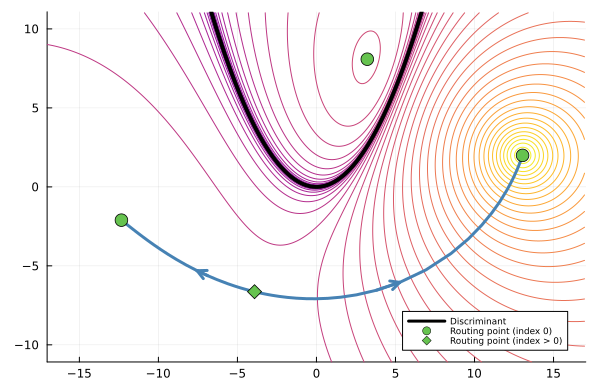
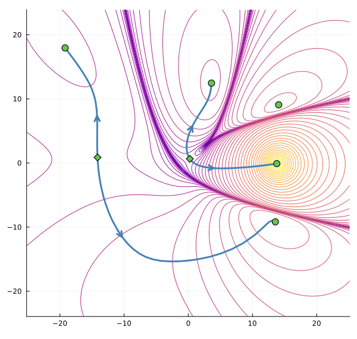

ProjectedHypersurfaceRegions.jl
This repository implements "numerical elimination" techniques for representing, and computing the complement of, real hypersurfaces that arise through projection of a known variety.
It is based on the paper Elimination Without Eliminating: Computing Complements of Real Hypersurfaces Using Pseudo-Witness Sets by Paul Breiding, John Cobb, Aviva Englander, Nayda Farnsworth, Jon Hauenstein, Oskar Henriksson, David Johnson, Jordy Lopez Garcia, and Deepak Mundayur.
Installation
You can install the package directly from the github repository as follows:
julia> using Pkg
julia> Pkg.add(url="https://github.com/oskarhenriksson/ProjectedHypersurfaceRegions.jl")Examples of usage
First of all, make sure that you have activated a Julia environment where the package is added.
You can then load the package in a Julia session by running the following command:
julia> using ProjectedHypersurfaceRegionsSuppose that we want to study the complement of the discriminant for the quadratic polynomial
\[f_{a,b}(x)=x^2+ax+b\]
with parameters $a$ and $b$.
We start by setting up the incidence variety $`\{(a,b,x)\in ℂ^3\mid f_{a,b}(x)=f′_{a,b}(x)=0\}`$ of the discriminant, which we use to form a ProjectedHypersurface that represents the discriminant via a pseudo-witness set.
julia> @var a b x;
julia> F = System([x^2 + a * x + b, 2x + a], variables = [a, b, x]);
julia> h = ProjectedHypersurface(F, [a, b])
Projected hypersurface of degree 2 in ambient dimension 2We can use h to evaluate (up to a constant) the logarithm of the defining polynomial of the discriminant, as well as the gradient and Hessian.
julia> p = [1, 1];
julia> h(p) # the value depends on the direction of the pseudo-witness line
1.5362619674238103
julia> gradient(h, p)
2-element Vector{ComplexF64}:
-0.6666666666666665 + 4.440892098500626e-16im
1.3333333333333335 - 2.220446049250313e-16im
julia> hessian(h, p)
2×2 Matrix{ComplexF64}:
-1.11111-9.99201e-16im 0.888889+4.44089e-16im
0.888889+7.77156e-16im -1.77778+9.71445e-16im
We use h to form a routing function as follows. (If we don't specify the center c for the denominator, it is chosen randomly.)
julia> r = RoutingFunction(h; c=[13, 2])
Routing function for projected hypersurface
===========================================
Variables: a, b
Numerator: Projected hypersurface of degree 2 in ambient dimension 2
Denominator: (1 + (-13 + a)^2 + (-2 + b)^2)^2We find the critical points via the critical_points function:
julia> routing_points, res, mon_res = critical_points(r);
julia> routing_points
4-element Vector{Vector{Float64}}:
[13.040296300414134, 1.993819726256856]
[3.2168112092392143, 8.082538361382136]
[-3.9180890683992504, -6.635887940807433]
[-12.339018441254092, -2.1071368134982262]Finally, we connect the critical points that belong to the same component of the complement:
julia> G, idx, failed_info = partition_of_critical_points(r, routing_points);The first output G describes the connected components. We see that the first, third and fourth critical points belong to the same connected component, and that the second one belongs to its own component:
julia> G
2-element Vector{Any}:
[1, 3, 4]
[2]Illustrations
The following pictures are created via the files quadratic.jl and cubic_two_parameters.jl in the examples directory.


Dependencies
The code relies on the following Julia packages:
HomotopyContinuation.jl(for numerical algebraic geometry)DifferentialEquations.jl(for gradient flow)LightGraphs.jl(for building the connectivity graph).
Documentation: Functions
ProjectedHypersurfaceRegions.PseudoWitnessSet — Type
PseudoWitnessSet(F::System, k::Int; linear_subspace_codim::Int, L::LinearSubspace)Generates a pseudo witness set for the image of the variety $V(F)\subseteq\mathbb{C}^n$ for a system $F\in\mathbb{C}[x_1,\ldots,x_n]^r$ under the projection $\pi\colon\mathbb{C}^k\times\mathbb{C}^{n-k}\to\mathbb{C}^k$.
Optional inputs:
linear_subspace_codim: The codimension of the linear space used for the witness set. Defaults ton - length(F).L: The linear space used for the witness set. Should be the preimage under $\pi$ of a linear subspace in $\mathbb{C}^k$
ProjectedHypersurfaceRegions.PseudoWitnessSet — Method
PseudoWitnessSet(F::System, k::Int; linear_subspace_codim::Int, L::LinearSubspace)Generates a pseudo witness set for the image of the variety $V(F)\subseteq\mathbb{C}^n$ for a system $F\in\mathbb{C}[x_1,\ldots,x_n]^r$ under the projection $\pi\colon\mathbb{C}^k\times\mathbb{C}^{n-k}\to\mathbb{C}^k$.
Optional inputs:
linear_subspace_codim: The codimension of the linear space used for the witness set. Defaults ton - length(F).L: The linear space used for the witness set. Should be the preimage under $\pi$ of a linear subspace in $\mathbb{C}^k$
ProjectedHypersurfaceRegions.RestrictionToLineSystem — Type
RestrictionToLineSystem(F::AbstractSystem, direction, k)Construct the system obtained from F(x) under the substitution x = [p + t * direction; w], where the first k coordinates of x are replaced by a point on the affine line with base point p and fixed direction direction.
The new variables are [t; w] and the new parameters are the coordinates of p.
ProjectedHypersurfaceRegions._expand_start_solutions — Method
_expand_start_solutions(∇r, H, S0, rhs0, k; verbose, start_grid_width, start_stepsize, start_center, monodromy_at_zero)Expand S0 by finding solutions of ∇r=0 through gradient descent and tracing to ∇r=rhs0. Returns (S0, newpts) where S0 is the expanded set of start solutions and newpts are the points found via gradient flow.
ProjectedHypersurfaceRegions._setup_monodromy_solver — Function
_setup_monodromy_solver(∇r, S0, rhs0; monodromy_at_zero, options)Set up the monodromy solver and initial start pair. Returns (MS, H, S0, rhs0, k) where MS is the MonodromySolver, H is the homotopy, S0 are the start solutions, rhs0 is the target parameters, and k is the number of variables.
ProjectedHypersurfaceRegions._solve_and_trace — Method
_solve_and_trace(MS, H, S0, rhs0, new_pts; monodromy_at_zero, start_grid_width)Perform monodromy solving and trace solutions to ∇r=0. Returns (routingpoints, result, monresult).
ProjectedHypersurfaceRegions.critical_points — Function
critical_points(r, S0, rhs0; kwargs...)Find critical points of the routing function using monodromy and gradient flow.